Part 5
5.BGM: Poem Panic!
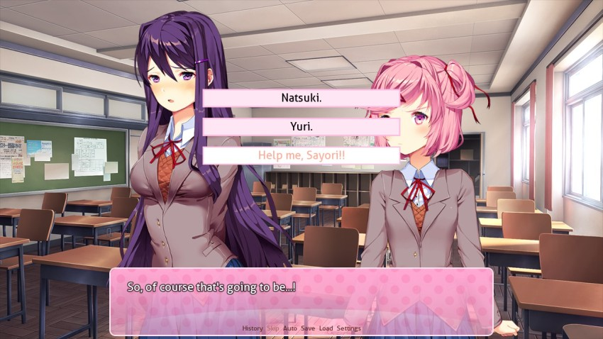
I'm glad this won because it's my personal opinion theyre both being pretty dumb about this. Sayori, bail me out here.
 : N-Natsuki..."
: N-Natsuki..."Natsuki glares at me, drying up any words I had in my mouth. So instead, I turn to Yuri.
: Yuri..." : ..."
: ..."But Yuri's expression is so defenseless that I can't bring myself to say anything to her.
BGM: Music fades out.
: ...Sayori!"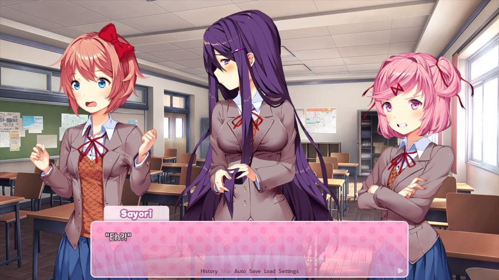
: ...Yeah! Everyone's fighting is making Sayori uncomfortable. How can the two of you keep fighting when you know you're making your friend feel like this?" : Mitayo..."
: Mitayo..." : Well... that's her problem! This isn't about her.": I-I agree...it's unfair for others to interject their own feelings into our conflict.": Yeah, unless Sayori wants to tell Yuri what a stuck-up jerk she's being."
: Well... that's her problem! This isn't about her.": I-I agree...it's unfair for others to interject their own feelings into our conflict.": Yeah, unless Sayori wants to tell Yuri what a stuck-up jerk she's being."BGM: Poem Panic!
You're not helping!
: She would never...! It's your immaturity that's made her upset in the first place!": Excuse me? Are you listening to yourself? This is exactly why...exactly why nobody likes--"Woah, woah, now! Too far!
BGM: Music ends abruptly.
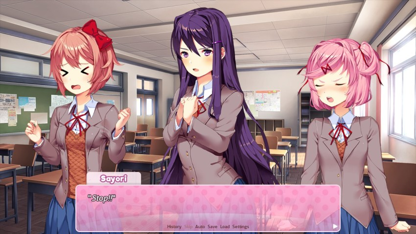
: --"BGM: Daijoubu! **New!**
: Natsuki! Yuri! You guys are my friends! I-I just want everyone to get along and be happy! My friends are wonderful people...and I love them because of their differences! Natsuki's poems...they're amazing because they give you so many feelings with just a few words! And Yuri's poems are amazing because they paint beautiful pictures in your head!": Everyone's so talented...so why are we fighting...?": Be-Because...": Well...": Also! Natsuki's cute and there's nothing wrong with that!"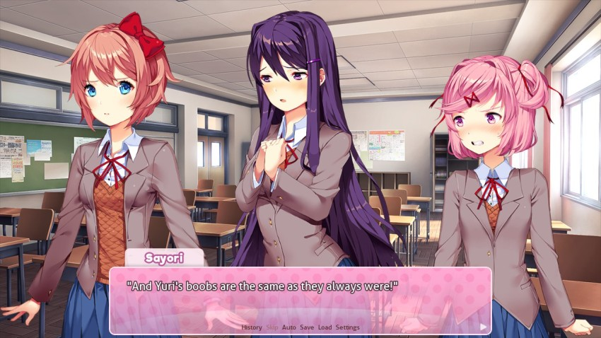
: Big and beautiful!!"Thats the spirit!
: ...": ...": Sayori..."Sayori stands triumphantly. Monika stands behind her with a bewildered expression.
: I'll...make some tea..."Yuri rushes off. Natsuki sits down with a blank expression on her face, staring at nothing.
: So, this is why Sayori is Vice President..."I whisper to Monika. She nods in return.
 : To be honest...I might come off as a good leader, and I can organize things..."
: To be honest...I might come off as a good leader, and I can organize things..."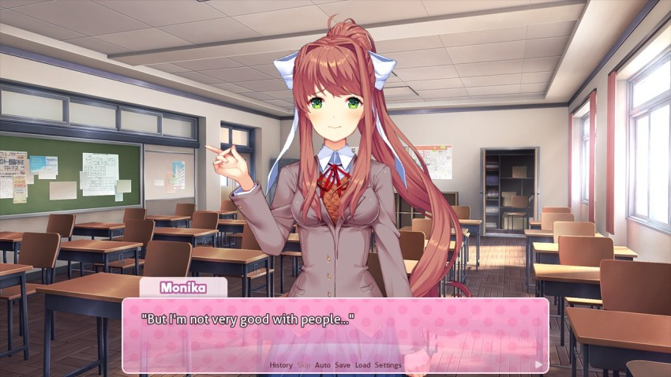
: I couldn't even bring myself to interject. As President, that's kind of embarrassing of me. Ahaha..."I mean, to be fair, you did try to interject. You just didnt do an amazingly good job of it.
: Nah...it's not like I can blame you. I wasn't able to say anything, either."You just got here. Its not your place to do so.
: Well...I guess that just means Sayori is amazing in her own ways, isn't she?": You could say that. She might be an airhead, but sometimes it's weirdly suspicious that she knows exactly what she's doing.: I see~" : I would hate to see her get herself hurt.": That makes two of us...you can count on me."
: I would hate to see her get herself hurt.": That makes two of us...you can count on me."She's our best friend. Have a little faith in us, please.
Monika smiles sweetly at me, causing my stomach to knot. Such a genuine person really does make a good President, regardless of what she says. If only I could get the chance to talk to her a little more...
Well, our friendship is just starting. Im sure well get our chance sooner or later.
Alright, so heres the thing if I go on from here, this update would be way shorter than Id like and honestly, all of the responses have interesting character development. This is the conclusion were going with, but since I had a lot of spare time this morning, Im going to include the other two options as well. Am I not merciful?
I have no intentions of doing this for every decision in this game, so dont get used to it. Unless, of course, I do in fact do it for every decision in this game. Only time will tell!
BGM: Poem Panic!
BGM: Music fades out.
: Natsuki. You're right that I liked your poem.": See??"BGM: Daijoubu!
: Wait! That's not an excuse for you to be so mean! You shouldn't pick a fight just because someone's opinion is different.": That's not what happened at all!"That is one hundred percent literally what happened. We were all there, Natsuki.
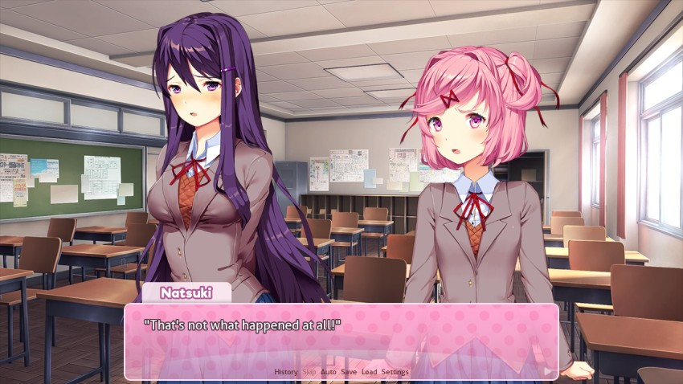
: Mm...I understand. Yuri?": Eh?": You're a seriously talented writer. It's no secret that I was impressed.": W-Well, that's...": But here's the thing. No matter how simple or refined someone's writing style is...they're still putting feelings into it, and it becomes something really personal. That's why Natsuki felt threatened when you said her poem was cute.": I...see...I didn't notice that I...I-I'm sorry...uuu..."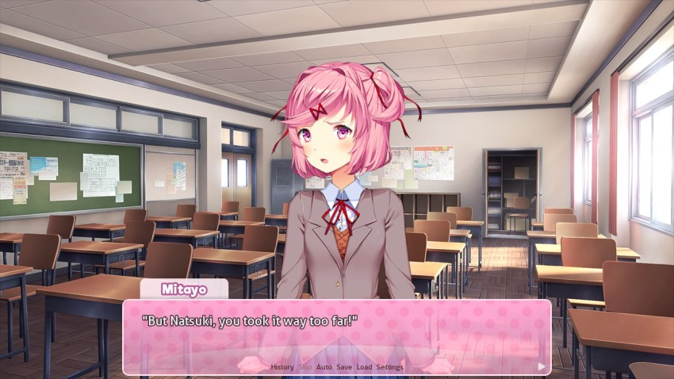
: Yuri means well, and if you just told her how you felt...then this wouldn't have happened in the first place.": Are you kidding? That's exactly what I did! It was her that--": Natsuki, I think that's enough. You both said some things that you didn't mean.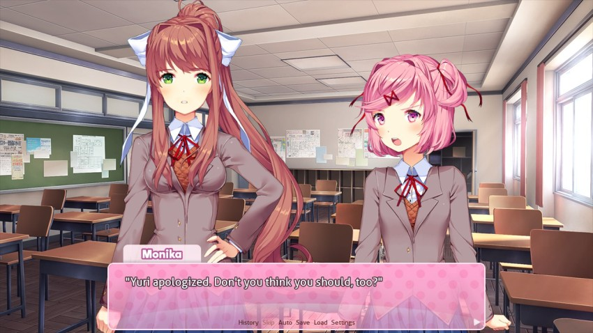
: Nnn...!"Natsuki clenches her fists. In the end, nobody has taken her side. She's trapped, at this point being defiant only because she can't handle the pressure. I end up even feeling bad for her.
: U-Um! Sometimes when I'm hurt... : Sayori, she doesn't need to--": You know what? I'm going to do that. It'll spare me from having to look at all your faces right now."
: Sayori, she doesn't need to--": You know what? I'm going to do that. It'll spare me from having to look at all your faces right now."Without warning, Natsuki snatches her own poem up from the desk and storms out. On her way out, she crumples up the poem with her hands and throws it in the trash.
My daughter is ten years old and she is leaps and bounds more mature than Natsuki is.
: Natsuki...": She really didn't need to do that..."I look across the room. Yuri has her chin buried in her hands while she stares down at her desk. I gingerly approach her and sit in an adjacent chair.
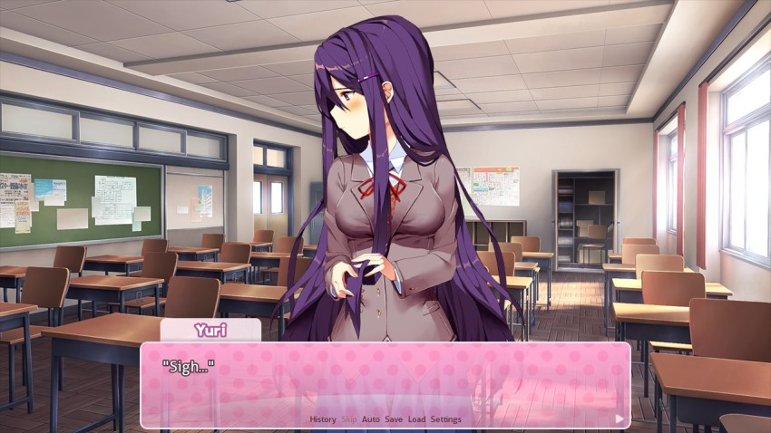
: Everything alright?": I'm so embarrassed...I can't believe I acted like that. You probably hate me now..."Why in the world would I hate you for having a fight with someone else? Ive never understood this thought process.
: No--Yuri! How could anyone not have gotten frustrated after being treated like that? You handled it as well as anyone could. I don't think any less of you.": Well...alright, I believe you. Thanks, Mitayo. You're too kind. I'm thankful to have you a part of this club now.": Er-- It's nothing.": One more thing...um, that one thing that Natsuki said..."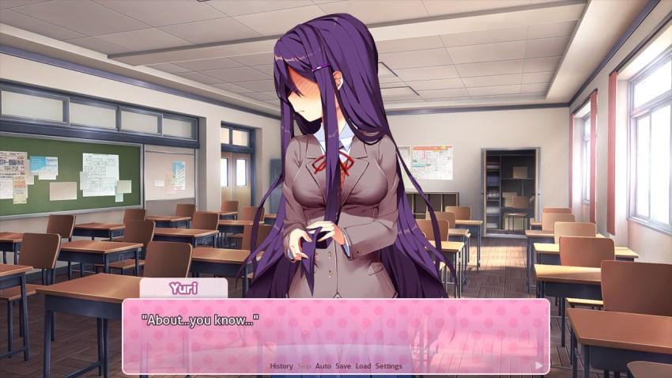
You mean about your allegedly bigger honkers? Is that what you mean, Yuri?
: I would never do anything...so shameful...so...": ...Eh? What thing did Natsuki say?": --! U-Um!"I honestly cant tell if Mitayo is actually curious or if hes just trolling Yuri but I approve either way.
: Well, never mind that...I-I'm going to go make some tea...": Ah, good idea. Make enough for more than one person, okay?": Y-Yeah."And finally...
BGM: Poem Panic!
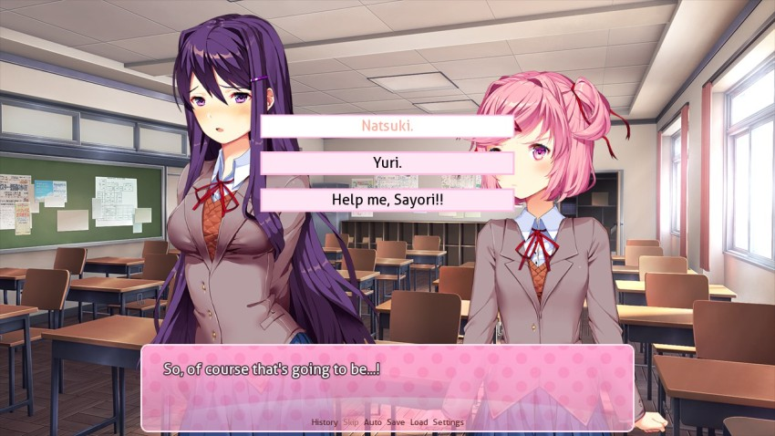
BGM: Music fades out.
: Um...Yuri! You're really talented.": Eh? W-Well..."BGM: Daijoubu!
: But Natsuki has a point! I think that..."I wrack my brain in an attempt to back myself up.
: I think that conveying feelings with few words can be just as impressive as well! It lets the reader's imagination take over. And Natsuki's poem did a really good job at that!"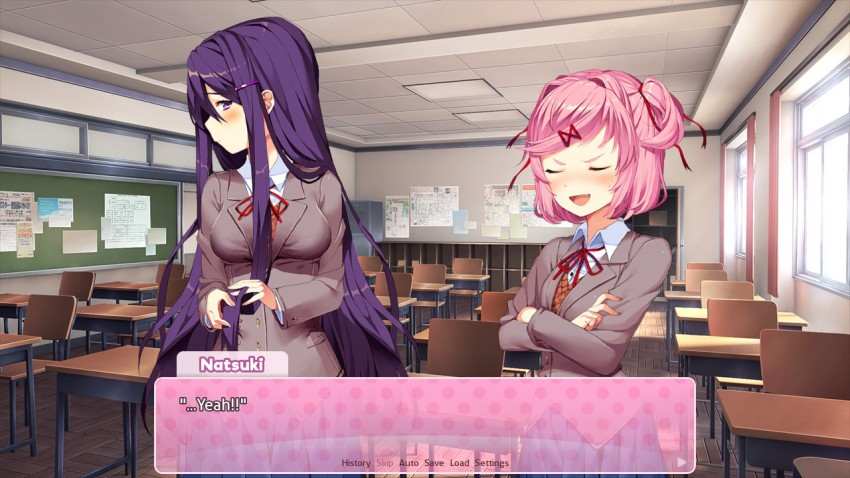
: It did, didn't it?! Ahah! Shows how much you know!" She's even a graceless winner.: T-That's not...": Natsuki...I think that's enough.": Huh? Me? But she was so mean to me...!"
She's even a graceless winner.: T-That's not...": Natsuki...I think that's enough.": Huh? Me? But she was so mean to me...!"Natsuki's voice whines.
: Look...what we talked about yesterday was right. Writing is a really personal thing. And sharing it can definitely be hard. 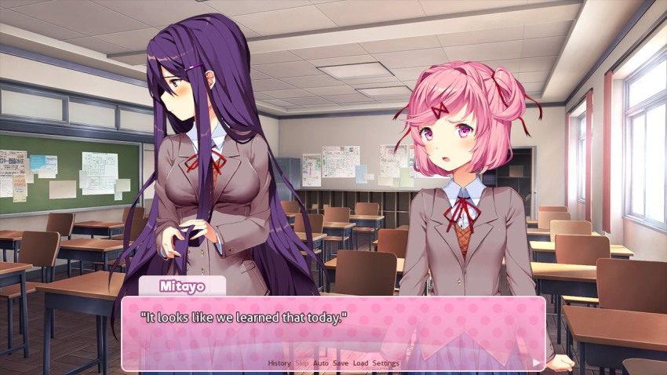
: Even small criticism can lead to something pretty heated."I glance over my shoulder. Sayori is nodding vigorously.
: Yeah, so you don't need to feel threatened. You're a great writer, Natsuki.": Ah--"Natsuki's voice gets caught in surprise.
: ...Thanks for noticing."She finally mutters that, barely audible.
: Yuri...": ...?"Yuri looks at me dejectedly. With a face like that, I can't help but feel bad for her as well.
: I'm sure that Natsuki didn't mean everything she said. So you don't need to feel threatened, either.": Well...If you say so...": Hey...! It's not like you need to apologize for me, Mitayo. Sheesh."Well, it wasnt clearly obvious that you WERE going to, so I mean
Natsuki takes a breath.
: I...the thing about...uu..."Natsuki glances around the room.
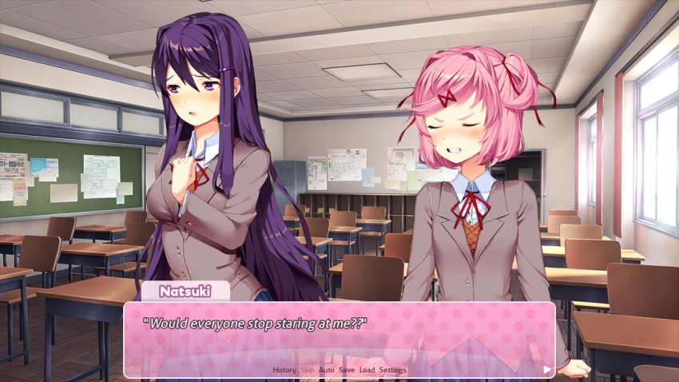
Unsurprisingly, Natsuki has a harder time with it than she boasted. Sayori and Monika look away.
: Hmph. Anyway...!"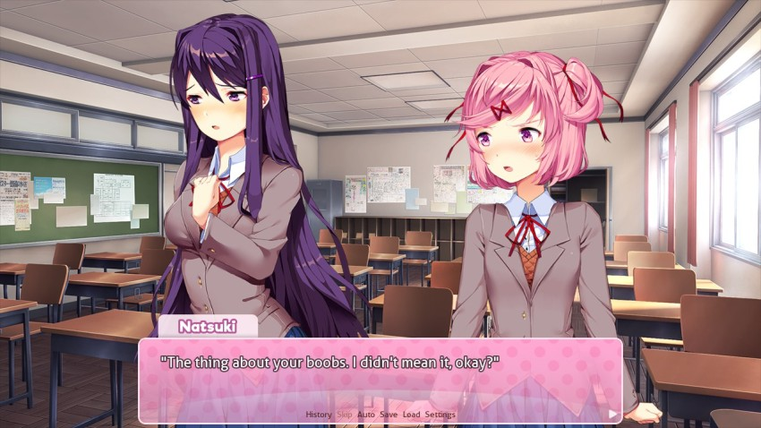
: That's all."Everything else, though? Entirely true.
Natsuki looks away, avoiding eye contact with anyone.
: Yeah! You're naturally beautiful, Yuri!!": Sayori?!": ...I-I'll go make some tea...": Ehh? I was just trying to help!": I'm sure she appreciated it, Sayori."I pat Sayori on the shoulder.
: Well, now that we're past that...everyone's read each other's poems, right? I hope that it was worthwhile for everyone! Especially you, Mitayo! And to be honest...it's a nice change of pace from the lazing around we got a little too used to. Ahahaha!"Oh, hey, she actually does mention that they dont things in this club. I never really noticed this line during my normal playthrough.
: Ah, so my joining the club was responsible for ruining the atmosphere...": No, not at all, not at all! There's still time before we go home. So we'll all relax for a bit. Of course, besides chatting, we do literature-related things in the clubroom...so maybe you can take the chance to pick up a book, or do some writing. After all, that's what the club is for!": I disagree, Monika!": Eh? About what?": That's not the most important thing about the literature club! The most important thing..."
 : Ahaha, of course...well, I guess that's why you're the Vice President, Sayori.": Ehehe..."
: Ahaha, of course...well, I guess that's why you're the Vice President, Sayori.": Ehehe..."In the end, though, Monika's right. Being in the Literature Club probably means I can't spend all my time doing nothing. But in the end...I guess it's been worth it so far.
We've done remarkably little in this club so far so I don't see why not.
All three paths merge at this point. Remember, the last two scenes didn't actually happen - we went with the Sayori option.
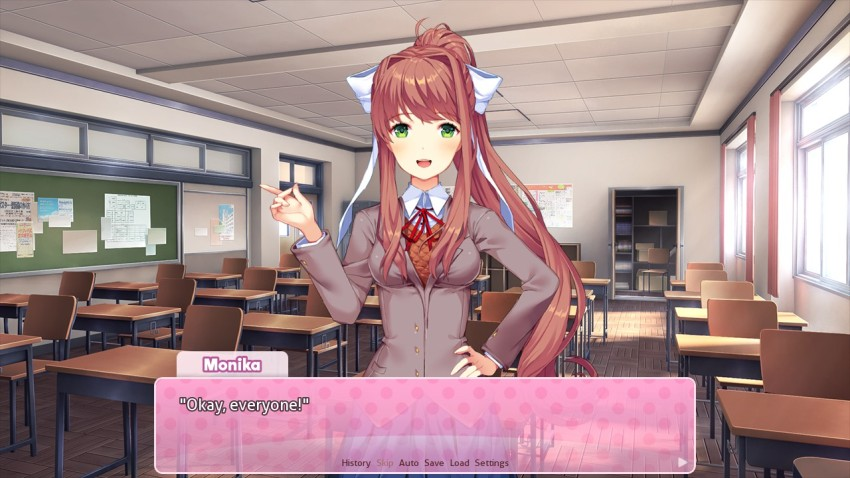
: It's just about time for us to leave. How did you all feel about sharing poems?": It was a lot of fun!": Well, I'd say it was worth it.": It was alright. Well, mostly.": Mitayo, how about you?": ...Yeah, I'd say the same. It was a neat thing to talk about with everyone.": Awesome! In that case, we'll do the same thing tomorrow. And maybe you learned something from your friends, too.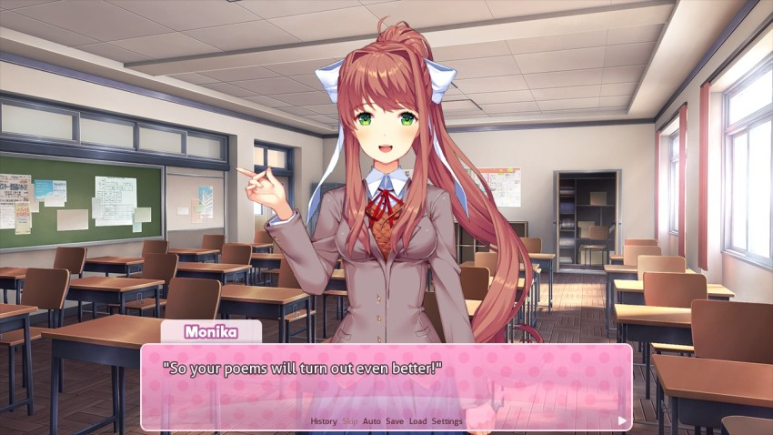
We, uh, sure are focusing on poetry in this club. Are there other forms of literature that were going to focus on or what?
: ..."I think to myself. I did learn a little more about the kinds of poems everyone likes. With any luck, that means I can at least do a better job impressing those I want to impress. I nod to myself with newfound determination.
: Mitayo! Ready to walk home?": Sure, let's go.": Ehehe~"Sayori beams at me. It truly has been a while since Sayori and I have spent this much time together. I can't really say I'm not enjoying it, either.
: Sayori...about what happened earlier..."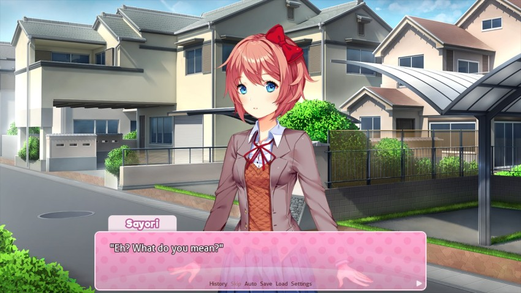
: You know, between Yuri and Natsuki. Does that kind of thing happen often?"Do they usually make boob-related accusations?
: No, no, no! That's really the first time I've seen them fight like that...I promise they're both wonderful people. You don't... You don't hate them, do you??"Again with this. Ive honestly hated very few people in my life Yuri and Natsuki would need to do a lot more than be mean to each other to join that list.
: No, I don't hate them! I just wanted your opinion, that's all. I can see why they'd make good friends with you.": Phew...you know, Mitayo...it's nice that I get to spend time with you in the club. But I think seeing you get along with everyone is what makes me the happiest. 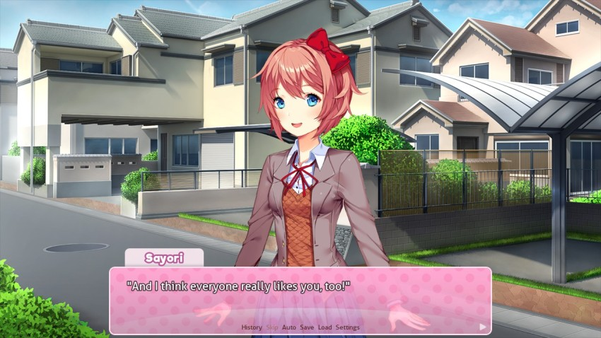
: That's--!": Ehehe~ Every day is going to be so much fun~": Sigh..."It looks like Sayori still hasn't caught onto the kind of situation I'm in. Sure, being friends with everyone is nice, but...does it really need to stop there?
Were getting some indications that hes up for love. I mean, weve been there all along, but Mitayo is finally joining the party.
: We'll just have to see what the future holds, Sayori."I pat Sayori on the shoulder. I said that more to myself than to her, but it's easy to use Sayori as an internal monologue sometimes.
: Okay~!"Yeah...Let's do this!
BGM: Dreams Of Love and Literature
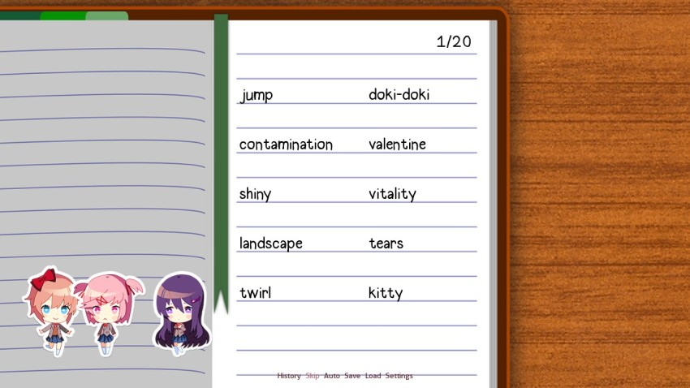
Alright, boyos. Poem two, electric boogaloo. Do you want to stick with angst, or switch it up a little bit? A recap of the words are available below.
As an added incentive, Ill give an extra vote to anyone who writes a haiku using at least three words from their chosen group. It has to be coherent just 5/7/5ing the words themselves doesnt count.
VOTE NOW: A, B, or C?
quote:
GROUP A
Happiness, sadness, death, tragedy, alone, love, adventure, sweet, excitement, fireworks, romance, tears, depression, heart, marriage, passion, childhood, fun, color, hope, friends, family, party, vacation, lazy, daydream, pain, holiday, bed, feather, shame, fear, warm, flower, comfort, dance, sing, cry, laugh, dark, sunny, raincloud, calm, silly, flying, wonderful, unrequited, rose, together, promise, charm, beauty, cheer, smile, broken, precious, prayer, clumsy, forgive, nature, ocean, dazzle, special, music, lucky, misfortune, loud, peaceful, joy, sunset, fireflies, rainbow, hurt, play, sparkle, scars, empty, amazing, grief, embrace, extraordinary, awesome, defeat, hopeless, misery, treasure, bliss, memories
GROUP B
Cute, fluffy, pure, candy, shopping, puppy, kitty, clouds, lipstick, parfait, strawberry, pink, chocolate, heartbeat, kiss, melody, ribbon, jumpy, doki-doki, kawaii, skirt, cheeks, email, sticky, bouncy, shiny, nibble, fantasy, sugar, giggle, marshmallow, hop, skipping, peace, spinning, twirl, lollipop, poof, bubbles, whisper, summer, waterfall, swimsuit, vanilla, headphones, games, socks, hair, playground, nightgown, blanket, milk, pout, anger, papa, valentine, mouse, whistle, boop, bunny, anime, jump
GROUP C
Determination, suicide, imagination, secretive, vitality, existence, effulgent, crimson, whirlwind, afterimage, vertigo, disoriented, essence, ambient, starscape, disarray, contamination, intellectual, analysis, entropy, vivacious, uncanny, incongruent, wrath, heavensent, massacre, philosophy, fickle, tenacious, aura, unstable, inferno, incapable, destiny, infallible, agonizing, variance, uncontrollable, extreme, flee, dream, disaster, vivid, vibrant, question, fester, judgment, cage, explode, pleasure, lust, sensation, climax, electricity, disown, despise, infinite, eternity, time, universe, unending, raindrops, covet, unrestrained, landscape, portrait, journey, meager, anxiety, frightening, horror, melancholy, insight, atone, breathe, captive, desire, graveyard